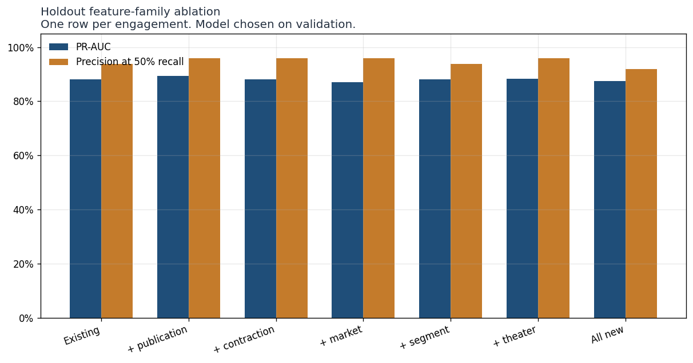
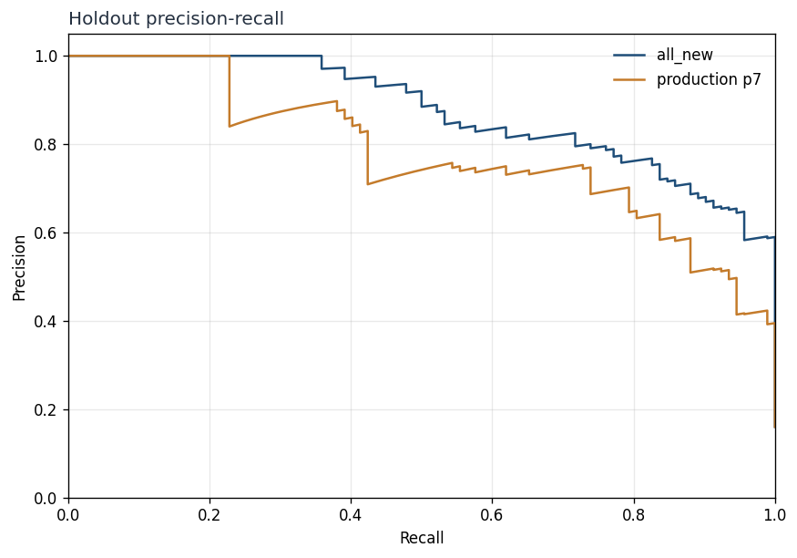
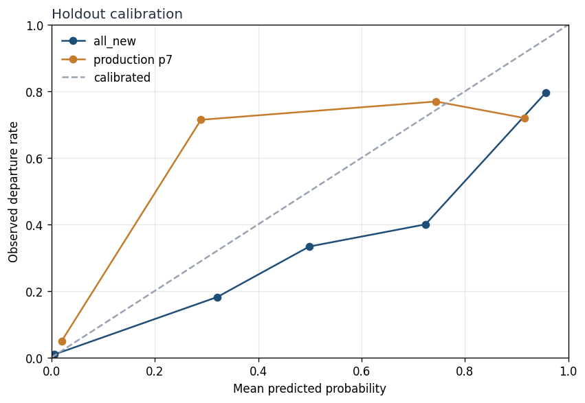
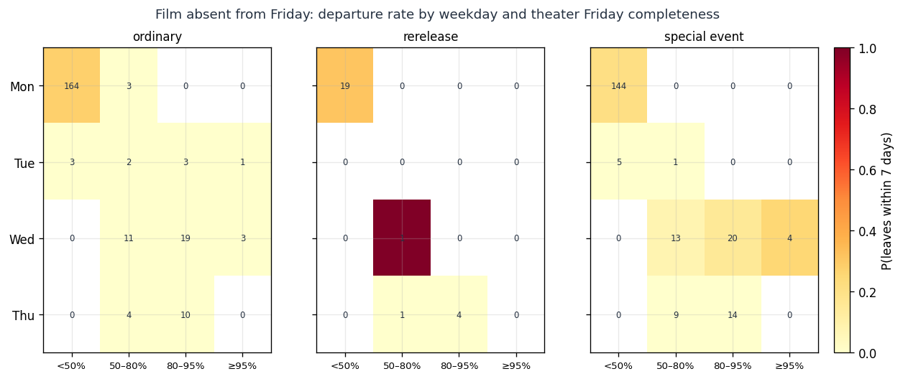
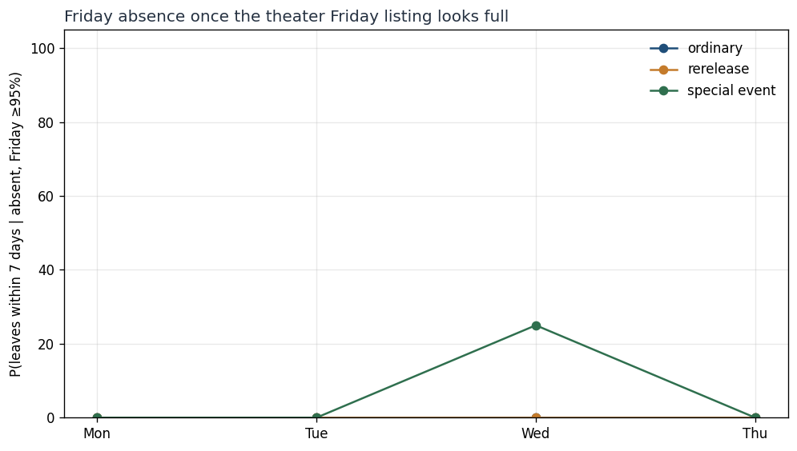
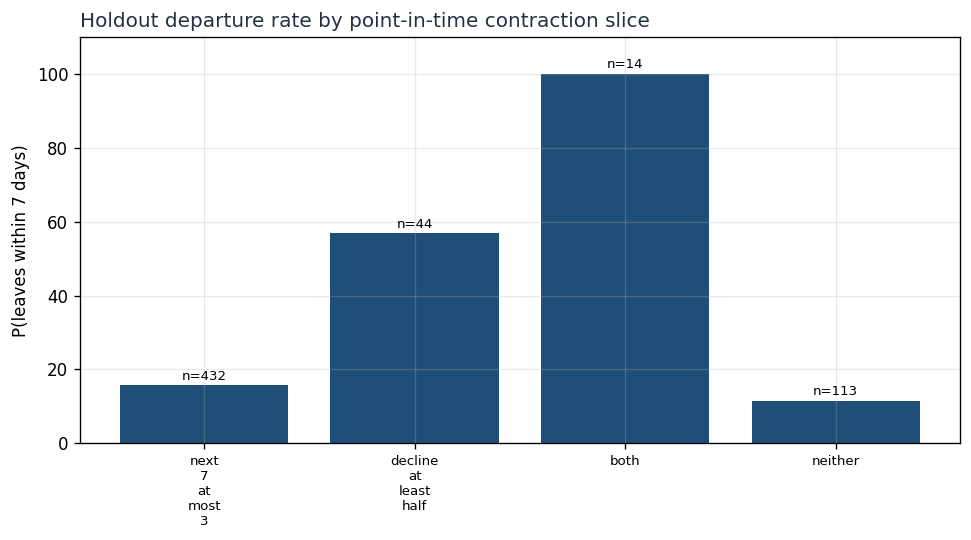
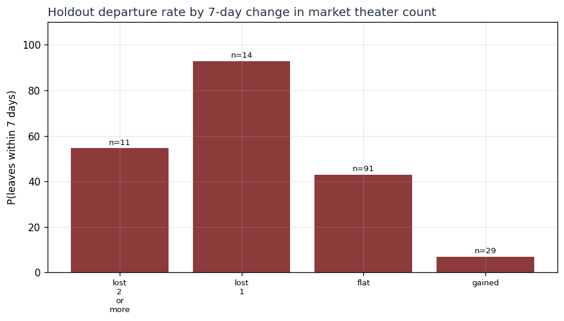
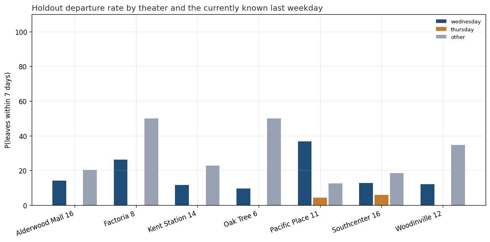
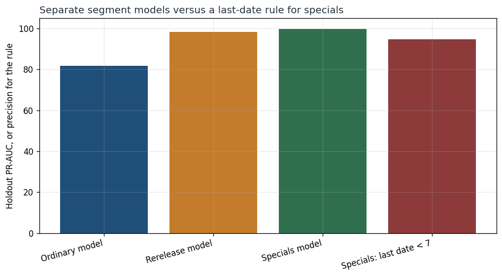
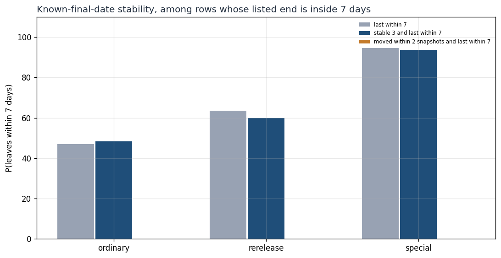

Train through 2026-08-16. Validation 2026-08-16 through 2026-09-06. Holdout is every later snapshot, one row per film×theater engagement. As-of 2026-10-01. A positive 7-day label means the confirmed end is fewer than 7 days away, matching the production survival horizon.
Production scores a film's market-wide run with the frozen discrete-time hazard model. On this film×theater holdout, that probability is a baseline, not a retrained model. 74.1% precision, 65.2% recall, F1 0.694, PR-AUC 0.780, n=575.
Each row is a logistic regression trained on dates through the train cutoff. The threshold is chosen on validation for precision of at least 75% when that is attainable, otherwise for F1. The evidence label is the holdout PR-AUC change versus the existing-feature model.
| Model | Holdout | PR-AUC minus existing | Evidence |
|---|---|---|---|
| existing | 97.6% precision, 44.6% recall, F1 0.612, PR-AUC 0.880, n=575 | 0.000 | no measurable gain |
| existing_publication | 100.0% precision, 45.7% recall, F1 0.627, PR-AUC 0.893, n=575 | 0.013 | moderate evidence |
| existing_contraction | 97.6% precision, 44.6% recall, F1 0.612, PR-AUC 0.882, n=575 | 0.002 | weak evidence |
| existing_market | 100.0% precision, 40.2% recall, F1 0.574, PR-AUC 0.871, n=575 | -0.010 | no measurable gain |
| existing_segment | 100.0% precision, 44.6% recall, F1 0.617, PR-AUC 0.882, n=575 | 0.002 | weak evidence |
| existing_theater | 97.6% precision, 44.6% recall, F1 0.612, PR-AUC 0.883, n=575 | 0.003 | weak evidence |
| all_new | 82.1% precision, 69.6% recall, F1 0.753, PR-AUC 0.875, n=575 | -0.006 | no measurable gain |
Friday completeness is listed Friday showtimes divided by that theater's median Friday volume on dates already played. It does not use the eventual Friday total.
Ordinary, absent from Friday, Wednesday–Thursday, completeness under 80%: n=0 and 0.0% (n=15, Wed–Thu pooled). Completeness at least 95%: 0.0% (n=3, Wed–Thu pooled).
Rerelease, same Wednesday–Thursday cut: under 50% n=0; at least 95% n=0. Specials: under 50% n=0; at least 95% 25.0% (n=4, Wed–Thu pooled).
The contraction chart is the holdout departure rate when the next 7 listed showtimes are sparse, when the played schedule has fallen at least halfway from its peak, and when both are true.
The market chart splits the same holdout by how many theaters the film lost or gained over about 7 days, using only earlier snapshots.
Shared all-feature model: 82.1% precision, 69.6% recall, F1 0.753, PR-AUC 0.875, n=575.
Separate ordinary: 69.6% precision, 84.8% recall, F1 0.765, PR-AUC 0.817, n=302. Separate rerelease: 77.8% precision, 100.0% recall, F1 0.875, PR-AUC 0.982, n=28. Separate specials: 94.6% precision, 100.0% recall, F1 0.972, PR-AUC 0.997, n=224. Specials last-date rule: 94.6% precision, 100.0% recall, F1 0.972, PR-AUC 0.946, n=224.
Known-last-date only: 57.6% precision, 73.9% recall, F1 0.648, PR-AUC 0.694, n=575. Plus weekday, Thursday/Wednesday flags, Friday absence, and Friday completeness: 54.4% precision, 100.0% recall, F1 0.705, PR-AUC 0.700, n=575.
All segments, known last date only: 57.6% precision, 73.9% recall, F1 0.648, PR-AUC 0.694, n=575. Plus stability: 70.7% precision, 31.5% recall, F1 0.436, PR-AUC 0.690, n=575.
Rerelease known-last only: 63.6% precision, 100.0% recall, F1 0.778, PR-AUC 0.834, n=28. Rerelease plus stability: 60.0% precision, 85.7% recall, F1 0.706, PR-AUC 0.948, n=28.
The false-positive and false-negative CSVs are the highest-scoring misses of the validation-selected model. Read them beside the production probability on the same row.
Nothing here is wired into scoring. The evidence column in the ablation table is the classification: strong, moderate, weak, or no measurable gain. A near-rule is worth a separate gate only when the high-completeness absence rate stays high on this holdout and the low-completeness rate does not.
| Baseline | Holdout |
|---|---|
| production | 74.1% precision, 65.2% recall, F1 0.694, PR-AUC 0.780, n=575 |
| known_last_7 | 58.2% precision, 100.0% recall, F1 0.736, PR-AUC 0.582, n=575 |
| publication | 22.2% precision, 2.2% recall, F1 0.040, PR-AUC 0.161, n=575 |
| contraction | 100.0% precision, 15.2% recall, F1 0.264, PR-AUC 0.288, n=575 |
Rows built 23716. Labeled 7-day observations 21057 (5902 positive). Holdout engagements 575 (92 positive).









